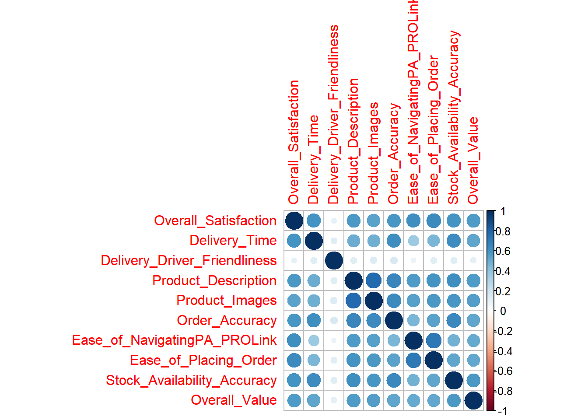

For this example we are going to use some NAPA_PSHIP data, if you want to replicate the analyses, you can pull the data using the hiden code
Show the code
#| include: falsepackages <-c('odbc', 'dplyr', 'tidyr', 'expss', 'data.table', 'RPostgres', 'car', 'purrr', 'stringr')if (length(setdiff(packages, rownames(installed.packages()))) >0) {install.packages(setdiff(packages, rownames(installed.packages())))} library(odbc)library(RPostgres)library(data.table)library(expss)library(car)library(purrr)library(stringr)library(dplyr)library(tidyr)library(DT)connection <-dbConnect(odbc(), Driver ='SQL Server', Server ='SRV_INT_TRANS\\SMGTRANS',Trusted_Connection ='True')rpt_connection <-dbConnect(odbc(), Driver ='SQL Server', Server ='SRV_INT_REPORT\\SMGREPORT',Trusted_Connection ='True')cx_query <-"SELECT *FROM edify.dbo.NAPA_PSHIP_Calls WITH (NOLOCK) INNER JOIN structures.dbo.NAPA_PSHIP_Store_Info WITH (NOLOCK) ON NAPA_PSHIP_Calls.[StoreId] = NAPA_PSHIP_Store_Info.[StoreId] WHERE NAPA_PSHIP_Calls.[VisitDate] BETWEEN '2023-01-01 12:00:00 AM' AND '2023-10-31 11:59:59 PM'AND NAPA_PSHIP_Calls.[TERM] IN ('WebOK', 'OK')AND NAPA_PSHIP_Store_Info.[IN_CSI] = -1AND NAPA_PSHIP_Store_Info.[TEST_STORE] = 0"cx_data <-dbGetQuery(connection, cx_query)#keep original names to reference later original_names <-names(cx_data)#custom recodes and calculations#custom recode options#custom calculationslabels_query <-"SELECT Survey.[name], Question.[question_id],Question.[number],Question.[fns_unique_id], Question_text.[question_text], Question_text.[name] as ShortText, Question_text.[last_modified_date], AnswerGroupValue.[answer_group_value], Answer_Text.Answer_TextFROM SMG_Reporting.dbo.Survey WITH (NOLOCK)JOIN SMG_Reporting.dbo.Question WITH (NOLOCK) ON Survey.[survey_id] = Question.[survey_id]JOIN SMG_Reporting.dbo.question_text WITH (NOLOCK) ON Question.[question_id] = Question_text.[question_id]JOIN SMG_Reporting.dbo.AnswerGroupValue WITH (NOLOCK) ON Question.[answer_group_id] = AnswerGroupValue.[answer_group_id]JOIN SMG_Reporting.dbo.Answer_Text WITH (NOLOCK) ON AnswerGroupValue.[answer_group_value_id] = Answer_Text.[answer_group_value_id]WHERE (Answer_Text.[language_id] = 3 and Question_text.[language_id] = 3) AND Survey.[name] = 'NAPA_PSHIP'ORDER BY Question_text.[last_modified_date] desc"labels_data <-dbGetQuery(rpt_connection, labels_query)#assign variable labelsfor(i in1:length(original_names)){tryCatch({ this_var <- original_names[i] this_var_label <-gsub('[^[:alnum:][:space:]]', '', (subset(labels_data, labels_data$number == this_var)$ShortText)[1]) this_var_label <-gsub(' ', '_', this_var_label) new_name <-paste0(this_var, '_', this_var_label) this_qtext <-gsub('[^[:alnum:][:space:]]', '', (subset(labels_data, labels_data$number == this_var)$question_text)[1]) this_qtext <-gsub(' ', '_', this_qtext) columns_which_contain_this_var <-names(cx_data)[grepl(this_var, names(cx_data), fixed=TRUE)]names(cx_data) <-gsub(this_var, new_name, names(cx_data)) }, error=function(e){})names(cx_data) <-gsub('_NA', '', names(cx_data))}#remove columns that are entirely NAcx_data <- cx_data[,colSums(is.na(cx_data))<nrow(cx_data)]
Inside R, there are multiple ways to run correlations, some from Base R and some from other very useful external packages.
The easiest way to compute a correlation between two variables is to use the cor.test function from the stats package which is automatically loaded in any R session. This function takes as input two vectors of the same size and it assumes they are both ordered in the same way, meaning that row 1 in the first vector corresponds to row 1 in the second vector.
So, to extract the vectors from an existing data frame, we would use the $ operator like this cx_data$var1. Putting it inside the function would look something like this:
Pearson's product-moment correlation
data: cx_data$R003000_Overall_Satisfaction and cx_data$R000007_Order_Accuracy
t = 49.517, df = 4765, p-value < 2.2e-16
alternative hypothesis: true correlation is not equal to 0
95 percent confidence interval:
0.5638217 0.6013193
sample estimates:
cor
0.5828808
When you run it just like that, by default it will give you the text based results that you can see above. However, if you want to use the results later, it might be useful to store them in a data frame. To do so, the tidy() function from the broom package can be handy.
This way, you could export the data frame into an excel using openxlsx or to an HTML table using gt() or datatable() from the DT package.
1.1 Matrix of correlations
However, if you are trying to see the correlations between multiple variables, the cor.test() function might not be the best choice for you. Rather, the easiest way to compute a correlation matrix is using the cor() function also from the stats package. This function takes an input a numerical data frame, meaning that we first need to filter out for just the variables we want to analyze. Fortunately, using the base R (|>) or the tidyverse pipe (%>%) makes it easy enough. You can do something like this:
The only things we did was selecting the variables we wanted and then making sure that there were no NA values in them by droping any row with NAs. However, if you want to do correlations using pariwise complete observations, you can adjust that inside the cor() call like this: cor(data, use = "pairwise.complete.obs"), if you want to check what other options are available, you can always use ?cor to display the documentation of the given function.
This is a very easy way to compute a correlation matrix, but it has two main issues that we can address using additional steps from other packages. The first issue is that again, it is not very readable nor exportable. The simplest fix is to transform the matrix that the function outputs into a data frame keeping the row names. To do so, we use the base R as.data.frame() and rownames_to_column() from the tibble package.
Once we have it like that we can go ahead and export in whatever way we prefer. For example, if we want to use an HTML output, we can color code the results directly from the gt package set of functions, doing something like this:
This looks better as is, and most of the time it should be enough, but the other potential issue we have with this approach is that it doesn’t give us any information on the significance of the correlation, the confidence intervals or the method used to extract the coefficient. To get those, a very nice wrapper is the correlation() function from the package with the same name. It automatically gives out a tidy table like the one we accomplished with cor.test() but for multiple pairs of correlations. To achieve this, you can simply replace the cor() call from the prior calls and use correlation instead. ## Correlation pairs
A nice feature of this function is that it allows to keep all redundant pairs, which makes it easy to filter for just one variable on one column so we can see its correlation to the rest of the variables instead of seeing all pairs. For example, if we are interestes in seeing how all possible key drivers correlate to OSAT, we can simply add another pipe and filter for OSAT in the first column
Finally as a bonus option to display correlations, we can use the package and function corrplot that allows to show correlations in a more visual way. The base function simply shows correlations in a color gradient. The main input it needs is a correlation matrix, so we can simply use the code we created before up until the cor() call and then simply add a call for the corrplot() function.
This package has a lot of features that can get you to very advances forms of displaying not only correlations but any other types of matrices. I’d recommend you to check for more details in the following link:
Pro tip:
One issue with this function is that, since it shows vertically and horizontally the names of all your vars, given the name coding we tend to use here at SMG, this causes the graph to be very smalled compared to the text. There are few workarounds related to the package itself such as the tl.srt or tl.cex arguments inside the corrplot function, but also, another option is renaming all our variables into a nicer cleaner way. If we are only using vars starting with R0... we can simply use the code I show in the next box to get rid of the FNS and simply keep the name of each variable.
Show the code
corrplot_data <- cx_data%>%select(UID, R003000_Overall_Satisfaction:R000012_Overall_Value)%>%pivot_longer(-UID, names_to ="var")%>%separate(var, into =c("FNS", "var"), sep ="_", extra ="merge")%>%select(-FNS)%>%pivot_wider(names_from ="var", values_from ="value")%>%select(-UID)%>%drop_na()%>%cor()corrplot_data%>%corrplot()

Looks better, but just to get you a gist of what this package is capable of, here is an example of what a final clean corrplot can look like with a few very simple tweaks